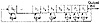

| Previous | Table of Contents | Next |
The code is a little more complicated when the shift register is longer than the computer’s word size, but not significantly so.
Note that all of these listings have an odd number of coefficients. I have provided such a large table because LFSRs are often used for stream-cipher cryptography and I wanted many examples so that different people would pick different primitive polynomials. Since, if p(x) is primitive, then so is xnp(1/x); each entry on the table is actually two primitive polynomials.
For example, if (a, b, 0) is primitive, then (a, a - b, 0) is also primitive. If (a, b, c, d, 0) is primitive, then (a, a - d, a - c, a - b, 0) is also primitive. Mathematically:
Primitive trinomials are fastest in software, because only two bits of the shift register have to be XORed to generate each new bit. Actually, all the feedback polynomials listed in Table 16.2 are sparse, meaning that they only have a few coefficients. Sparseness is always a source of weakness, sometimes enough to break the algorithm. It is far better to use dense primitive polynomials, those with a lot of coefficients, for cryptographic applications. If you use dense polynomials, and especially if you make them part of the key, you can live with much shorter LFSRs.
Generating dense primitive polynomials modulo 2 is not easy. In general, to generate primitive polynomials of degree k you need to know the factorization of 2k - 1. Three good references for finding primitive polynomials are [652,1285,1287].
LFSRs are competent pseudo-random-sequence generators all by themselves, but they have some annoying nonrandom properties. Sequential bits are linear, which makes them useless for encryption. For an LFSR of length n, the internal state is the next n output bits of the generator. Even if the feedback scheme is unknown, it can be determined from only 2n output bits of the generator, by using the highly efficient Berlekamp-Massey algorithm [1082,1083]: see Section 16.3.
Also, large random numbers generated from sequential bits of this sequence are highly correlated and, for certain types of applications, not very random at all. Even so, LFSRs are often used as building blocks in encryption algorithms.
LFSRs in Software
LFSRs are slow in software, but they’re faster in assembly language than in C. One solution is to run 16 LFSRs (or 32, depending on your computer’s word size) in parallel. This scheme uses an array of words that is the length of the LFSR, with each bit position in the words representing a different LFSR. Assuming all the feedback polynomials are the same, this can run pretty quickly. In general, the best way to update shift registers is to multiply the current state by suitable binary matrices [901].
It is also possible to modify the LFSR’s feedback scheme. The resultant generator is no better cryptographically, but it still has a maximal period and is easy to implement in software [1272]. Instead of using the bits in the tap sequence to generate the new left-most bit, each bit in the tap sequence is XORed with the output of the generator and replaced; then the output of the generator becomes the new left-most bit (see Figure 16.5). This is sometimes called a Galois configuration.
In C, this looks like:
#define mask 0×80000057
static unsigned long ShiftRegister=1;
void seed_LFSR (unsigned long seed)
{
if (seed == 0) /* avoid calamity */
seed = 1;
ShiftRegister = seed;
}
int modified_LFSR (void)
{
if (ShiftRegister & 0×00000001) {
ShiftRegister = ((ShiftRegister ^ mask >> 1) |
0×8000000;
return 1;
} else {
ShiftRegister >>= 1;
return 0;
}
}

Figure 16.5 Galois LFSR.
The savings here is that all the XORs can be done as a single operation. This can also be parallelized, and the different feedback polynomials can be different. The Galois configuration can also be faster in hardware, especially in custom VLSI implementations. In general, if you are using hardware that is good at shifts, use a Fibonacci configuration; if you can exploit parallelism, use a Galois configuration.
Most practical stream-cipher designs center around LFSRs. In the early days of electronics, they were very easy to build. A shift register is nothing more than an array of bit memories and the feedback sequence is just a series of XOR gates. Even in VLSI circuitry, a LFSR-based stream cipher can give you a lot of security with only a few logic gates.
The problem with LFSRs is that they are very inefficient in software. You want to avoid sparse feedback polynomials—they facilitate correlation attacks [1051,1090,350]—and dense feedback polynomials are inefficient. Any stream cipher outputs a bit at a time; you have to iterate the algorithm 64 times to encrypt what a single iteration of DES can encrypt. In fact, a simple LFSR algorithm like the shrinking generator described later is no faster in software than DES.
This branch of cryptography is fast-paced and very politically charged. Most designs are secret; a majority of military encryptions systems in use today are based on LFSRs. In fact, most Cray computers (Cray 1, Cray X-MP, Cray Y-MP) have a rather curious instruction generally known as “population count.” It counts the 1 bits in a register and can be used both to efficiently calculate the Hamming distance between two binary words and to implement a vectorized version of a LFSR. I’ve heard this called the canonical NSA instruction, demanded by almost all computer contracts.
On the other hand, an astonishingly large number of seemingly complex shift-register-based generators have been cracked. And certainly military cryptanalysis institutions such as the NSA have cracked a lot more. Sometimes it’s amazing to see the simple ones proposed again and again.
Linear Complexity
Analyzing stream ciphers is often easier than analyzing block ciphers. For example, one important metric used to analyze LFSR-based generators is linear complexity, or linear span. This is defined as the length, n, of the shortest LFSR that can mimic the generator output. Any sequence generated by a finite-state machine over a finite field has a finite linear complexity [1006]. Linear complexity is important because a simple algorithm, called the Berlekamp-Massey algorithm, can generate this LFSR after examining only 2n bits of the keystream [1005]. Once you’ve generated this LFSR, you’ve broken the stream cipher.
| Previous | Table of Contents | Next |
){kind=link}
){kind=link}